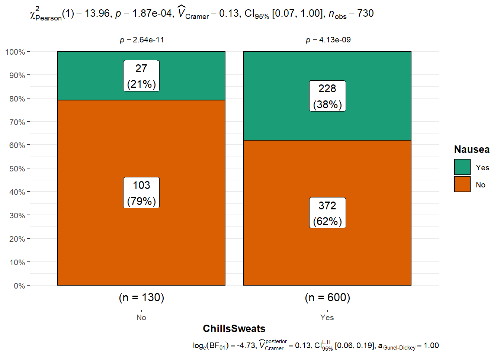

here() starts at C:/Users/weifa/OneDrive/Documents/GitKraken/MADA/data analysis/Weifan-MADA-portfolio
library(skimr)library(gtsummary)
#BlackLivesMatter
library(ggstatsplot)
You can cite this package as:
Patil, I. (2021). Visualizations with statistical details: The 'ggstatsplot' approach.
Journal of Open Source Software, 6(61), 3167, doi:10.21105/joss.03167
SwollenLymphNodes ChestCongestion ChillsSweats NasalCongestion Sneeze Fatigue
1 Yes No No No No Yes
2 Yes Yes No Yes No Yes
3 Yes Yes Yes Yes Yes Yes
4 Yes Yes Yes Yes Yes Yes
5 Yes No Yes No No Yes
6 No No Yes No Yes Yes
SubjectiveFever Headache Weakness CoughIntensity Myalgia RunnyNose AbPain
1 Yes Yes Mild Severe Mild No No
2 Yes Yes Severe Severe Severe No No
3 Yes Yes Severe Mild Severe Yes Yes
4 Yes Yes Severe Moderate Severe Yes No
5 Yes Yes Moderate None Mild No No
6 Yes Yes Moderate Moderate Moderate No No
ChestPain Diarrhea EyePn Insomnia ItchyEye Nausea EarPn Hearing Pharyngitis
1 No No No No No No No No Yes
2 No No No No No No Yes Yes Yes
3 Yes No No Yes No Yes No No Yes
4 No No No Yes No Yes Yes No Yes
5 No No Yes Yes No Yes No No Yes
6 Yes Yes No No No Yes No No Yes
Breathless ToothPn Vision Vomit Wheeze BodyTemp
1 No No No No No 98.3
2 No No No No No 100.4
3 Yes Yes No No No 100.8
4 No No No No Yes 98.8
5 No No No No No 100.5
6 Yes No No No Yes 98.4
skim(exp_data)
Data summary
Name
exp_data
Number of rows
730
Number of columns
28
_______________________
Column type frequency:
factor
27
numeric
1
________________________
Group variables
None
Variable type: factor
skim_variable
n_missing
complete_rate
ordered
n_unique
top_counts
SwollenLymphNodes
0
1
FALSE
2
No: 418, Yes: 312
ChestCongestion
0
1
FALSE
2
Yes: 407, No: 323
ChillsSweats
0
1
FALSE
2
Yes: 600, No: 130
NasalCongestion
0
1
FALSE
2
Yes: 563, No: 167
Sneeze
0
1
FALSE
2
Yes: 391, No: 339
Fatigue
0
1
FALSE
2
Yes: 666, No: 64
SubjectiveFever
0
1
FALSE
2
Yes: 500, No: 230
Headache
0
1
FALSE
2
Yes: 615, No: 115
Weakness
0
1
FALSE
4
Mod: 338, Mil: 223, Sev: 120, Non: 49
CoughIntensity
0
1
FALSE
4
Mod: 357, Sev: 172, Mil: 154, Non: 47
Myalgia
0
1
FALSE
4
Mod: 325, Mil: 213, Sev: 113, Non: 79
RunnyNose
0
1
FALSE
2
Yes: 519, No: 211
AbPain
0
1
FALSE
2
No: 639, Yes: 91
ChestPain
0
1
FALSE
2
No: 497, Yes: 233
Diarrhea
0
1
FALSE
2
No: 631, Yes: 99
EyePn
0
1
FALSE
2
No: 617, Yes: 113
Insomnia
0
1
FALSE
2
Yes: 415, No: 315
ItchyEye
0
1
FALSE
2
No: 551, Yes: 179
Nausea
0
1
FALSE
2
No: 475, Yes: 255
EarPn
0
1
FALSE
2
No: 568, Yes: 162
Hearing
0
1
FALSE
2
No: 700, Yes: 30
Pharyngitis
0
1
FALSE
2
Yes: 611, No: 119
Breathless
0
1
FALSE
2
No: 436, Yes: 294
ToothPn
0
1
FALSE
2
No: 565, Yes: 165
Vision
0
1
FALSE
2
No: 711, Yes: 19
Vomit
0
1
FALSE
2
No: 652, Yes: 78
Wheeze
0
1
FALSE
2
No: 510, Yes: 220
Variable type: numeric
skim_variable
n_missing
complete_rate
mean
sd
p0
p25
p50
p75
p100
hist
BodyTemp
0
1
98.94
1.2
97.2
98.2
98.5
99.3
103.1
▇▇▂▁▁
#Get Summary Tables
#Get Summary Table for exp_data, grouped by Nauseatbl_summary(exp_data,by=Nausea)
Characteristic
No, N = 4751
Yes, N = 2551
Swollen Lymph Nodes
200 (42%)
112 (44%)
Chest Congestion
246 (52%)
161 (63%)
Chills/Sweats
372 (78%)
228 (89%)
Nasal Congestion
355 (75%)
208 (82%)
Sneeze
242 (51%)
149 (58%)
Fatigue
424 (89%)
242 (95%)
Subjective Fever
309 (65%)
191 (75%)
Headache
387 (81%)
228 (89%)
Weakness
None
39 (8.2%)
10 (3.9%)
Mild
172 (36%)
51 (20%)
Moderate
210 (44%)
128 (50%)
Severe
54 (11%)
66 (26%)
Cough Severity
None
30 (6.3%)
17 (6.7%)
Mild
99 (21%)
55 (22%)
Moderate
232 (49%)
125 (49%)
Severe
114 (24%)
58 (23%)
Myalgia
None
63 (13%)
16 (6.3%)
Mild
159 (33%)
54 (21%)
Moderate
198 (42%)
127 (50%)
Severe
55 (12%)
58 (23%)
Runny Nose
336 (71%)
183 (72%)
Abdominal Pain
31 (6.5%)
60 (24%)
Chest Pain
135 (28%)
98 (38%)
Diarrhea
40 (8.4%)
59 (23%)
Eye Pain
71 (15%)
42 (16%)
Sleeplessness
260 (55%)
155 (61%)
Itchy Eyes
107 (23%)
72 (28%)
Ear Pain
96 (20%)
66 (26%)
Loss of Hearing
17 (3.6%)
13 (5.1%)
Sore Throat
395 (83%)
216 (85%)
Breathlessness
164 (35%)
130 (51%)
Tooth Pain
88 (19%)
77 (30%)
Blurred Vision
9 (1.9%)
10 (3.9%)
Vomiting
14 (2.9%)
64 (25%)
Wheezing
137 (29%)
83 (33%)
BodyTemp
98.50 (98.20, 99.30)
98.60 (98.20, 99.30)
1 n (%); Median (IQR)
#Histogram and Density plot for for Body Temperature
plot_histogram(exp_data)
plot_density(exp_data)
#It appears that the Body Temperature is right skewed, which is expected. Data distributed within a reasonable range (~97-103).let’s check for normality
plot_qq(exp_data)
##Exploration of the relationships between outcomes and predictors #The predictors that I choose include: ChillsSweats, Vomit, Weakness, ChestPain, and RunnyNose #the outcomes are BodyTemp and Nausea
# Explore all predictor variables vs `BodyTemp` # `ChillsSweats` VS `BodyTemp` ggplot(exp_data,aes(x=ChillsSweats, y=BodyTemp))+geom_boxplot()
# It appears that the median temperature is slightly higher in the population who have chillsweats VS no chillsweats. There are more samples that have high body temperature (>102 degree) in the group with chillssweats symptom.#`Vomit` VS `BodyTemp` grouped by weaknessggplot(exp_data,aes(x=Vomit, y=BodyTemp,color=Weakness))+geom_quasirandom(alpha=0.5,varwidth=TRUE)+stat_summary(fun=median,geom="crossbar")
#There are more people who have no vomit than people who suffer vomit. Most people have moderate weakness.# `Weakness` levels VS `BodyTemp`ggplot(exp_data,aes(x=Weakness, y=BodyTemp))+geom_boxplot()
#It seems like overall the severe weakness comes with highest median temperature, which is expected# `ChestPain` VS `BodyTemp`ggplot(exp_data,aes(x=ChestPain, y=BodyTemp))+geom_quasirandom(alpha=0.5,varwidth=TRUE)+stat_summary(fun=median,geom="crossbar")
# `RunnyNose` vs `BodyTemp`group by weakness levelsggplot(exp_data,aes(x=RunnyNose, y=BodyTemp))+geom_quasirandom(alpha=0.5,varwidth=TRUE)+stat_summary(fun=median,geom="crossbar")
#`Vomit` VS `BodyTemp`ggplot(exp_data,aes(x=Vomit, y=BodyTemp))+geom_quasirandom(alpha=0.5,varwidth=TRUE)+stat_summary(fun=median,geom="crossbar")
ChillsSweats, Vomit, Weakness, ChestPain, and RunnyNose
#Let's check if there's any pattern between outcome `Nausea` VS all the predictor variables# `Nausea` VS `ChillsSweats`ggbarstats(data=exp_data,x=Nausea,y=ChillsSweats,label="both")

# `Nausea` VS `Vomit`ggbarstats(data=exp_data,x=Nausea,y=Vomit,label="both")
# `Nausea` VS `Weakness`ggbarstats(data=exp_data,x=Nausea,y= Weakness,label="both")
# `Nausea` VS `ChestPain`ggbarstats(data=exp_data,x=Nausea,y=ChestPain,label="both")
# `Nausea` VS `RunnyNose`ggbarstats(data=exp_data,x=Nausea,y=RunnyNose,label="both")
#It seems like other than RunnyNose, every other predictors have a clear relationship with Nausea